Un algorithme est une procédure pour résoudre un problème.
Il prend en entrée (input) une instance de ce problème
et produit la sortie (output) correspondant à cette instance.
Par exemple, voici un algorithme qui calcule le maximum d’une liste de nombres.
Entrée : une liste de nombres réels
Sortie : le maximum des nombres de la liste
Algorithme (en français) :
mettre le_max = le premier élément de la liste ;
passer sur chaque élément de la liste. S’il est plus grand que le_max, mettre le_max = cet élément ;
retourner le_max.
Une instance de ce problème : la liste [10, -3, 7, 2, 6, 7]
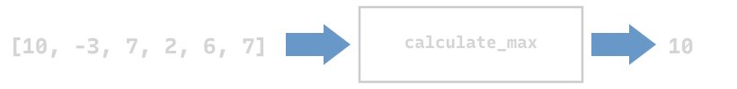
Une autre instance : la liste [8, 33, 5, -20, 0]
Ne sont pas des instances valides de ce problème :
[[0, 1], [1, 2]]
['a', 'b', 'c'] (même s’il existe un ordre sur les chaînes de caractères !)
Problème vs. algorithme
À un problème peuvent correspondre plusieurs algorithmes qui le résolvent.
Un algorithme doit avant tout être correct : produire la bonne sortie pour toute instance du problème. Cette question de correctitude, on la traitera la semaine prochaine.
Parmi les algorithmes corrects, comment caractériser « le meilleur » ?
Pour certains problèmes on ne sait pas s’il existe un algorithme qui les résout (par exemple, un problème lié à la conjecture de Syracuse) ; pour certains problèmes on sait qu’il n’en existe aucun (par exemple, le problème de l’arrêt).
Pour certains problèmes, on ne connaît encore aucun algorithme efficace qui les résout.
Que veut dire « efficace » ?
Algorithme vs. implémentation
Un algorithme est une procédure générale pour résoudre un problème.
Un programme est une implémentation spécifique d’un algorithme dans un langage de programmation donné, par exemple Python, et sur un système donné.
À un même algorithme correspondent donc plusieurs implémentations.
Les algorithmes vus dans ce cours seront donnés sous forme de programmes Python.
On veut comparer leur efficacité temporelle : comment le temps de parcours croît quand la taille de l’entrée \(n\) grandit (d’autres notions d’efficacité existent, comme l’efficacité de l’espace de travail en mémoire).
Même entrée, même sortie, deux algorithmes : pour \(n\) petit, ils prennent presque le même temps ; pour \(n\) grand, la différence devient énorme.
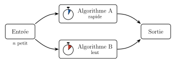
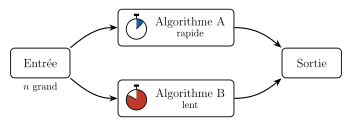
Exemple : la somme maximale
Problème : étant donné une liste de \(n \geq 2\) nombres, trouver la plus grande somme de deux éléments d’indices distincts. Par exemple, pour L = [945, 815, 1132, 731, 981, 673], la sortie est \(1132 + 981 = 2113\).
Une première idée : essayer toutes les paires d’indices i < j, et garder la plus grande somme L[i] + L[j]. On appelle ce type d’algorithme un algorithme de force brute.
Une deuxième idée : trouver le plus grand élément de la liste et le retirer, puis trouver le plus grand des éléments restants. Pour L, on trouve \(1132\), puis \(981\).
Deux algorithmes pour le même problème : comment décider lequel est le plus rapide ?
Temps de parcours et implémentation
Le temps qu’un algorithme prend pour tourner dépend de la taille \(n\) de l’entrée, et grandit avec \(n\).
Pour un \(n\) donné, le temps que cet algorithme prend dépend de l’implémentation spécifique. Mais combien ce temps croît quand \(n\) grandit ne dépend pas de l’implémentation, mais est une propriété fondamentale de l’algorithme.
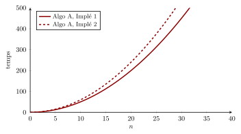
Il nous faut donc un moyen de décrire mathématiquement la vitesse de croissance du temps de parcours d’un algorithme en fonction de \(n\).
On s’intéresse au comportement asymptotique, ce qui se passe quand \(n\) tend vers l’infini.
Vitesse de croissance
Considérons la fonction \(f(n) = 3n^2 + 250n + 20\). Que se passe-t-il quand on multiplie \(n\) par 10 ?
\(n\)
\(n^2\)
\(f(n)\)
1\(\times 10\)
1\(\times 100\)
273\(\times 10{,}33\)
10\(\times 10\)
100\(\times 100\)
2 820\(\times 19{,}51\)
100\(\times 10\)
10 000\(\times 100\)
55 020\(\times 59{,}07\)
1 000\(\times 10\)
1 000 000\(\times 100\)
3 250 020\(\times 93{,}08\)
10 000\(\times 10\)
100 000 000\(\times 100\)
302 500 020\(\times 99{,}26\)
100 000\(\times 10\)
10 000 000 000\(\times 100\)
30 025 000 020\(\times 99{,}93\)
1 000 000\(\times 10\)
1 000 000 000 000\(\times 100\)
3 000 250 000 020\(\times 99{,}99\)
10 000 000
100 000 000 000 000
300 002 500 000 020
Quand \(n\) est multiplié par 10, \(f(n)\) est multiplié par un facteur qui se rapproche de 100, comme \(n^2\) : \((10n)^2 = 100\,n^2\). On dit que \(f\) et \(n^2\) ont la même vitesse de croissance.
Objectif : exprimer mathématiquement que \(f\) croît à la même vitesse que \(n^2\).
La notation \(\Theta(g)\)
Notation \(\Theta(g)\)
Soient \(f\) et \(g\) deux fonctions sur les entiers naturels. On dit que \(f\) a complexité \(\Theta(g)\) lorsque \(f\) et \(g\)croissent à la même vitesse pour \(n\) grand.
Plus précisément : pour \(n\) suffisamment grand, \(f(n)\) est toujours comprise entre deux multiples constants de \(g(n)\).
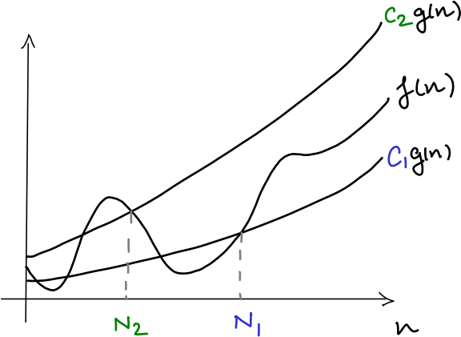
Par exemple, \(3n^2 + 250n + 20\) a complexité \(\Theta(n^2)\), car il est plus grand que \(2n^2\) et plus petit que \(4n^2\) (pour \(n\) suffisamment grand).
Mais identifier les complexités ne suffit pas : il faut pouvoir les comparer. Il nous faut un ordre.
La notation \(\mathcal{O}(g)\) et \(\Omega(g)\)
\(f\) est \(\mathcal{O}(g)\)
« \(f\) croît au plus aussi vite que \(g\) » (borne supérieure)
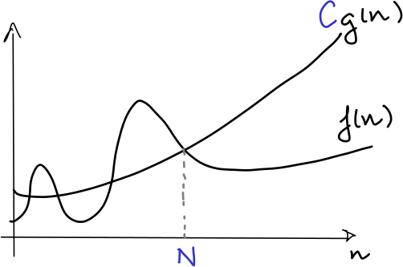
\(f\) « \(\leq\) » \(g\)
\(f\) est \(\Omega(g)\)
« \(f\) croît au moins aussi vite que \(g\) » (borne inférieure)
\(f\) « \(\geq\) » \(g\)
\(f\) est \(\Theta(g)\)
« \(f\) croît à la même vitesse que \(g\) » (les deux à la fois)
\(f\) « \(=\) » \(g\)
Remarque. On compare des vitesses de croissance, pas des valeurs : \(1000n\) est \(\mathcal{O}(n^2)\), bien que \(1000n > n^2\) pour \(n < 1000\).
Définition formelle de \(\mathcal{O}(g)\)
Notation \(\mathcal{O}(g)\)
Soit \(g\) une fonction positive de \(n\). \(\mathcal{O}(g)\) est l’ensemble des fonctions positives \(f\) pour lesquelles il existe des réels \(C > 0\) et \(N > 0\) tels que \[\forall n > N, \quad f(n) \leq C \cdot g(n).\]
Notation. Pour \(f \in \mathcal{O}(g)\), on dit « \(f\) est \(\mathcal{O}(g)\) ». On écrit aussi \(f = \mathcal{O}(g)\) (de même pour \(\Omega\) et \(\Theta\)).
On dit aussi que \(f\) est dominée par \(g\) : \(\mathcal{O}(g)\) est l’ensemble des fonctions dominées par \(g\).
Exemple : \(1000n\) est \(\mathcal{O}(n^2)\)
On cherche des réels \(C > 0\) et \(N > 0\) tels que \(1000n \leq C \cdot n^2\) pour tout \(n > N\).
\(1000n \leq 50\,n^2\) pour tout \(n \geq 20\) : \(C = 50\) et \(N = 20\) conviennent.
\(1000n \leq 0{,}1\,n^2\) pour tout \(n \geq 10\,000\) : \(C = 0{,}1\) et \(N = 10\,000\) conviennent aussi.
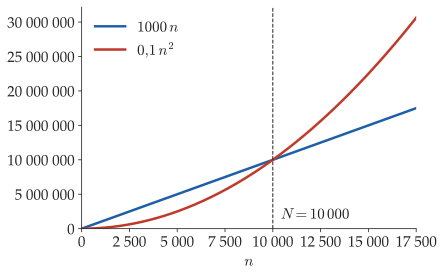
Il suffit de trouver un couple \((C, N)\) : plus \(C\) est petit, plus \(N\) doit être grand.
Définition formelle de \(\Omega(g)\)
Notation \(\Omega(g)\)
\(\Omega(g)\) est l’ensemble des fonctions positives \(f\) pour lesquelles il existe des réels \(C > 0\) et \(N > 0\) tels que \[\forall n > N, \quad f(n) \geq C \cdot g(n).\]
Comme pour \(\mathcal{O}\), pour \(f \in \Omega(g)\), on dit « \(f\) est \(\Omega(g)\) », ou « \(f\)domine\(g\) » : \(\Omega(g)\) est l’ensemble des fonctions qui dominent \(g\).
On peut montrer que \(g\) est \(\mathcal{O}(f)\) si et seulement si \(f\) est \(\Omega(g)\).
Définition formelle de \(\Theta(g)\)
Notation \(\Theta(g)\)
\(\Theta(g)\) est l’ensemble des fonctions positives \(f\) pour lesquelles il existe des réels \(C_1, C_2 > 0\) et \(N > 0\) tels que \[\forall n > N, \quad C_1 \cdot g(n) \leq f(n) \leq C_2 \cdot g(n).\]
Pour \(f \in \Theta(g)\), on dit « \(f\) est \(\Theta(g)\) », ou « \(f\) a complexité \(\Theta(g)\) ».
On peut montrer que \(f\) est \(\Theta(g)\) si et seulement si \(f\) est \(\mathcal{O}(g)\) et \(\Omega(g)\).
Puissances et polynômes
① Puissances. Pour des entiers \(p < q\), \(n^p\) est \(\mathcal{O}(n^q)\), mais \(n^q\) n’est pas \(\mathcal{O}(n^p)\) (exercice facultatif de la série). On peut donc ranger les puissances de \(n\) sur un axe, de la croissance la plus lente à la plus rapide :
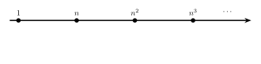
② Polynômes. Si \(f\) est \(\Theta(n^p)\), elle se place au même endroit que \(n^p\) sur l’axe. Par exemple :
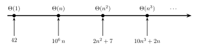
En particulier, un polynôme de degré \(p\) (de coefficient dominant positif) est \(\Theta(n^p)\).
Sommes de puissances
③ Puissances non entières. On étend la notion de polynôme aux puissances rationnelles : \(\sqrt{n} = n^{\frac{1}{2}}\), \(\;n^2\sqrt{n} = n^{\frac{5}{2}}\), … La règle ① reste vraie pour des puissances rationnelles \(p < q\).
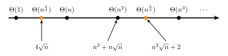
Intuition. Pour une somme de puissances, on ne garde que le terme dominant, et on oublie son coefficient.
Hiérarchie des complexités
Sur l’axe des classes \(\Theta\) (cf. « Puissances et polynômes »), on peut aussi représenter \(\mathcal{O}\) et \(\Omega\).
Les fonctions qui sont \(\mathcal{O}(n^2)\) sont dans \(\Theta(n^2)\) ou à sa gauche (en rouge).
Celles qui sont \(\Omega(n)\) sont dans \(\Theta(n)\) ou à sa droite (en bleu).
Celles qui sont à la fois \(\mathcal{O}(n^2)\) et \(\Omega(n)\) sont entre les deux (en violet).
Retour aux algorithmes
Supposons que nous ayons une implémentation donnée d’un algorithme \(A\).
Soit \(T(n)\) le temps le plus long possible que \(A\) puisse prendre pour une entrée de taille \(n\) : c’est le temps de parcours dans le pire des cas.
Le problème est que \(T(n)\) dépend de l’implémentation de \(A\). Cependant, la vitesse à laquelle \(T(n)\) croît ne dépend que de \(A\), pas de son implémentation ! Notre objectif est donc de trouver une fonction simple \(g(n)\) telle que \(T\) ait complexité \(\Theta(g)\).
Ici, par exemple, la complexité de Algo A est \(\Theta(n^2)\), et celle de Algo B est \(\Theta(n)\).
\(\Rightarrow\) Pour \(n\) suffisamment grand, Algo B est plus rapide que Algo A, quelle que soit l’implémentation utilisée.
Si \(T(n)\) est un polynôme, l’intuition est la suivante : oublier tout sauf le terme dominant (et son coefficient) dans \(T(n)\), c’est abstraire les détails d’implémentation d’un algorithme.
Modèle de Computation
Comment trouver \(T(n)\), ou du moins sa classe de complexité ? En regardant le code !
Si l’entrée est une liste de \(n\) éléments, l’entrée est de taille \(n\).
On suppose que les opérations suivantes prennent un temps constant :
opérations arithmétiques : addition, soustraction, multiplication, division, reste entier, …
manipulation de données : créer une variable, affecter une valeur à une variable, lire et comparer les valeurs de deux variables, …
opérations de contrôle : instructions if, …
appel d’une fonction ;
accès à un élément L[i] d’une liste, étant donné l’indice i ;
Remarque. Ces suppositions modélisent de façon assez réaliste le calcul sur un ordinateur moderne.
Attention. Les valeurs manipulées doivent elles-mêmes être de taille constante ! Plus précisément :
l’entrée est de taille \(n\) si c’est une liste de \(n\) éléments qui ne grandissent pas avec \(n\) ;
les opérations ci-dessus prennent un temps constant si elles s’appliquent à des valeurs qui ne grandissent pas avec \(n\).
\(T(n)\) dépend alors du nombre d’exécutions de chaque instruction.
Modèle de computation : opérations de listes
Pourquoi len(L), L[i], L.append(x) et L.pop() prennent-elles un temps constant ?
Le modèle de computation que nous utilisons s’appelle le « Random Access Model ». Il repose sur le fait que la mémoire d’un ordinateur est organisée de telle sorte que l’accès à une adresse donnée (pour lire la valeur qui y est stockée, ou pour y écrire une valeur) se fait en temps constant.
Une liste Python stocke des références aux objets qu’elle contient, et non les objets eux-mêmes. Une référence (une flèche sur la figure) est simplement l’adresse en mémoire de l’objet vers lequel elle pointe.
L’espace nécessaire pour stocker une référence est fixe (par exemple 4 ou 8 octets, selon les systèmes).
Lorsqu’une liste est créée, Python lui réserve un bloc de mémoire contigu, qui commence à une certaine adresse. Il stocke aussi la longueur de la liste à un endroit précis et connu.
Remarque. C’est une représentation conceptuelle de l’implémentation la plus courante de Python, CPython ; les détails peuvent différer. Par exemple, la longueur de la liste n’est pas forcément stockée au début du bloc, mais elle est en tout cas à un endroit connu de l’interpréteur.
Le temps de parcours de chaque opération.
len(L). La longueur de la liste est stockée à une adresse connue : Python y accède en temps constant.
L[i]. Pour accéder à l’élément d’indice i de la liste L, Python :
calcule l’adresse de la référence stockée à cet indice : (adresse du début de la liste) + i * (taille d'une référence) ;
lit la référence stockée à cette adresse : c’est à son tour l’adresse de l’objet vers lequel elle pointe ;
accède à cette adresse, et donc à l’objet lui-même, en lecture ou en écriture.
Chacune de ces étapes (un calcul arithmétique, un accès à une adresse en mémoire) prend un temps constant. Lire ou écrire L[i] prend donc, en tout, un temps constant.
L.append(x). Pour ajouter un élément à la fin de la liste, Python :
crée l’objet à ajouter, et le stocke à une certaine adresse en mémoire ;
calcule l’adresse où stocker la nouvelle référence : (adresse du début de la liste) + (longueur de la liste) * (taille d'une référence) ;
écrit à cette adresse la référence vers l’objet ;
met à jour la longueur de la liste : il lit la longueur à l’endroit où elle est stockée, lui ajoute 1, et écrit la nouvelle valeur au même endroit.
Chacune de ces étapes prend un temps constant (en supposant, bien sûr, que l’objet qu’on crée et dont on ajoute la référence à la fin de la liste a lui-même une taille constante), donc append prend un temps constant.
L.pop(). Pour enlever le dernier élément de la liste, Python modifie simplement la longueur de la liste, en lui retranchant 1 ! Cette mise à jour prend un temps constant.
def maximum(L): n =len(L) # temps c0 le_max = L[0] # temps c1for i inrange(1, n): # temps c2 à chaque itérationif L[i] > le_max: # temps c3 à chaque itération le_max = L[i] # temps c4 à chaque itération, au pirereturn le_max # temps c5print(maximum([10, -3, 7, 2, 6, 7]))
10
La boucle fait \(n - 1\) itérations. Au pire (si la liste est strictement croissante), le_max = L[i] est exécutée à chaque itération.
L’appel maximum(L) dure donc au pire \[T(n) = c_0 + c_1 + c_5 + (c_2 + c_3 + c_4)(n - 1) = c\,n + c' :\]maximum a un temps de parcours linéaire en \(n\) : maximum a complexité \(\Theta(n)\).
max(L) fait la même chose que notre fonction maximum : comme on l’a vu, elle a complexité \(\Theta(n)\).
L.remove(x) est, elle aussi, linéaire en \(n\), la longueur de L (cf. Série 7, exercice 5).
Le reste prend un temps constant. Temps de parcours total : \(T_\ell(n) = c_3\, n + c_4\), donc max_somme_lin a complexité \(\Theta(n)\).
Remarque.max_somme_linmodifie la liste L (elle en retire le maximum). Dans la série, vous écrirez une version qui laisse L inchangée et qui a toujours complexité \(\Theta(n)\).
Mesurer un temps de parcours
La fonction time du module time donne l’heure actuelle, en secondes. Pour mesurer le temps que prend un appel, on regarde l’heure juste avant et juste après :
from time import timefrom random import randintL = []for i inrange(1000): L.append(randint(0, 1000))t0 = time()max_somme(L)t1 = time()print('max_somme(L) a pris', t1 - t0, 'secondes')
max_somme(L) a pris 0.02234172821044922 secondes
En répétant ces mesures pour des listes de plus en plus grandes (et pour max_somme_lin), on obtient des courbes comme celles de la slide suivante.
Comparaison des temps mesurés
Temps de parcours mesurés sur un ordinateur, pour des listes de nombres aléatoires :
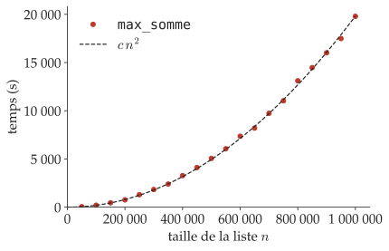
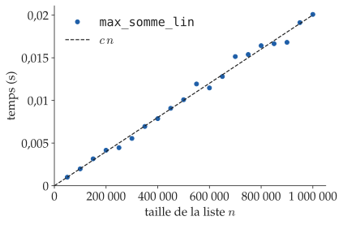
Les points suivent bien \(c\,n^2\) et \(c\,n\). Attention aux échelles : pour un million d’éléments, max_somme_lin met \(\sim\!0{,}02\) s, alors que max_somme met \(\sim\!20\,000\) s, soit plus de 5 heures !
Sur les mêmes listes, le temps de max_somme_lin est si petit qu’on ne le distingue pas de \(0\).
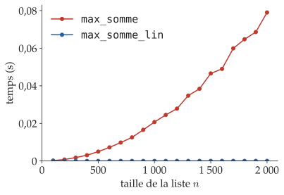
Algorithmes optimaux
Revenons à la question « comment décider lequel est le plus rapide ? » : max_somme a complexité \(\Theta(n^2)\), et max_somme_lin a complexité \(\Theta(n)\).
Sur l’axe, max_somme_lin est à gauche de max_somme : pour \(n\) grand, max_somme_lin est plus rapide, quelle que soit l’implémentation.
Peut-on faire mieux que \(\Theta(n)\) ? Non ! Tout algorithme pour ce problème doit au moins lire toute la liste : son temps de parcours est \(\Omega(n)\), il doit donc être dans la zone bleue.
max_somme_lin est au bord gauche de la zone bleue : il est asymptotiquement optimal.
De même, pour calculer le maximum d’une liste, tout algorithme doit lire toute la liste. maximum, qui a complexité \(\Theta(n)\), est donc asymptotiquement optimal.
Remarque finale : le pire des cas
Pour les algorithmes vus aujourd’hui, la complexité ne dépend que de \(n\), pas des valeurs de la liste. Par exemple, pour trouver le maximum d’une liste, il faut parcourir toutes les valeurs, même si le maximum est le premier élément de la liste !
Plus tard, on verra des algorithmes dont le temps de parcours dépend de l’instance donnée en entrée, pas seulement de sa taille. Par exemple, pour chercher une valeur dans une liste, on peut la trouver tout de suite, ou devoir parcourir toute la liste.
Dans ce cours, on étudiera toujours le temps de parcours d’un algorithme dans le pire des cas (cf. « Retour aux algorithmes ») : il donne une garantie sur le temps de parcours, pour n’importe quelle instance.